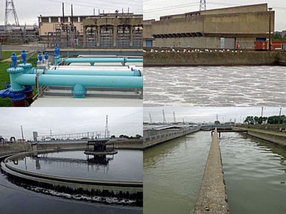

水泵运行状态查询
概述
大型企业、自来水厂、矿山、电厂、居民生活区等生活、生产地点都需要建有泵房，安装相应的水泵，以满足生产、生活需要。

由于供水系统的泵房地理位置分散，安全性要求较高，一般采取人工巡视、现场检查、电话保修的原始方法，来确保水泵的正常运作。

然而，传统的人工操作模式，具有以下主要不足：
- 出现故障，业主报修，管理者才知道。
- 巡检周期长，管理者不能及时知道泵站状况。
- 操作者专业水平不高，不能及时发现设备隐患。
- 花费大量费用用于人工值守或巡检。
随着传感技术和通信技术的发展，为泵站前端执行机构提供远程的监控系统，监测水泵的运行状态，将事故隐患消灭于萌芽之中，保障水厂供水的安全可靠。
产品主要功能
WiiHey推出面向水泵的无人巡检系统，它在设备关键部位设立传感器，通过无线通信技术传输数据，实现远程自动化设备监测，并且当设备状态恶化时，主动发出预警干预信号。

- 采集功能：采集水泵的振动、温度、湿度等数据指标；
- 分析功能：通过采集的数据，系统自动分析水泵的运行状态、识别异常和发布报警。
- 人机交互：工业平板、PC浏览器、手机微信APP等，实时、远程展示数据和设备运行状态。
- 数据通信：支持GPRS、以太网、Wi-Fi、Sub-G、蓝牙等通信方式。
- 报警功能：振动水平过高、非正常启停机，通过人机客户端进行及时报警。
- 专家维护：专家远程分析设备运行状态，准确提供维护、维修建议。
振动监测是分析设备运行状态的优秀手段，其原理可参见右侧的白皮书。
系统拓扑结构

总结
通过提高水泵的自动化监控水平，可以改变传统模式操作过程繁琐、劳动强度大、人为因素多等缺陷，优化泵站运行效率和管理水平，为安全供水奠定了坚实的基础。
| 参数 | 内容 |
|---|---|
| 监测对象 | 加压泵、无负压供水设备等 |
| 评估指标 | 振动、冲击能量、健康度 |
| 无线通信 | 2.4GHz/BLE/WiFi/4G等组合 |
| 续航时间 | 18个月@每分钟上报数据/5年@每2小时上报数据 |
| 工作温度 | -20°C-+90°C |
| 安装方式 | 螺栓固定、粘贴固定 |
| 温度测量 | ± 0.5 °C, 15 to +60 °C |
| 湿度测量 | ± 4.5% rH, 20 to +80% rH |
| 加速度测量 | ±16g重力加速度 |
| 加速度计类型 | 三轴MEMS |
| 分析依据 | 时域、频域 |
| 报警阈值 | 自适应 |
| 消息推送 | 微信（首选） |
（略）